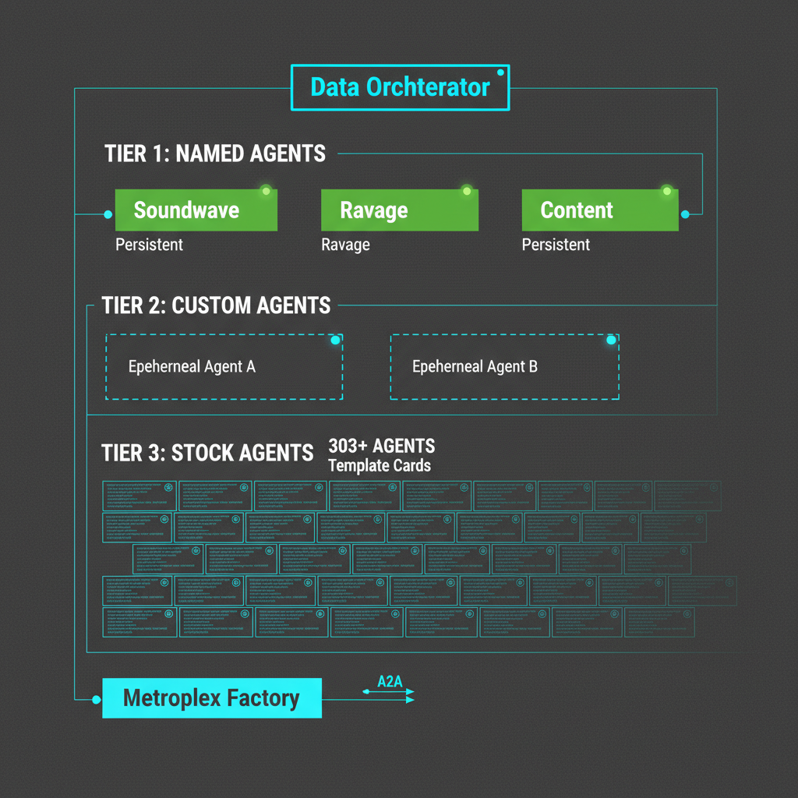
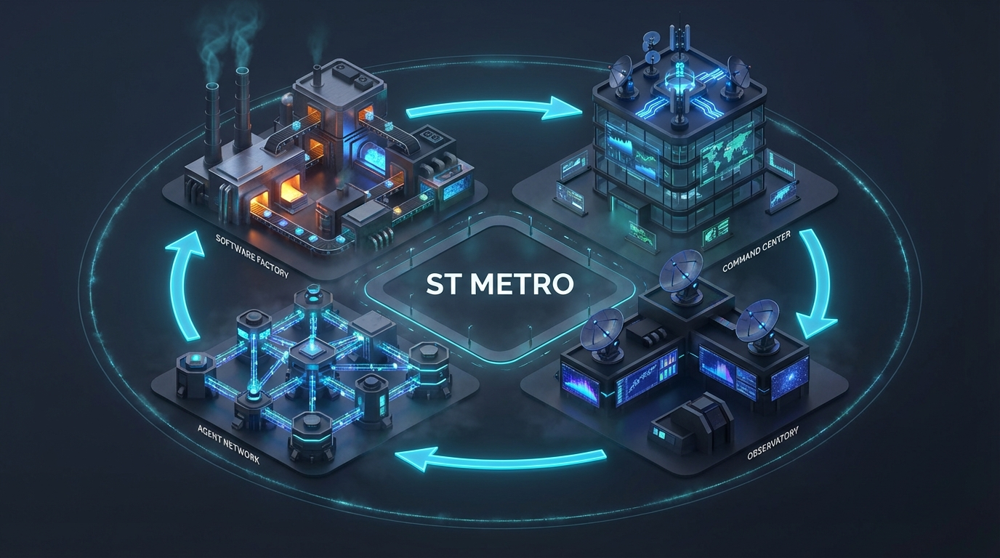

Multi-agent orchestration that routes tasks to the right AI agent. Four-tier architecture from ephemeral workers to persistent specialists.
You describe what you need. CMD figures out who should do it, dispatches the work, and brings back results — with full logs and outcome tracking.
Submit a mission goal in natural language. CMD classifies the intent and complexity automatically.
The orchestrator selects the best-fit agent from the tier system based on skills, availability, and past performance.
The agent runs the task via A2A protocol (Tier 1) or Claude Code session (Tier 2/3). Progress streams in real time.
Outcomes are logged per agent per task type. Routing gets smarter over time. Named agents build context across tasks.
Not all agents are equal. CMD organizes them by autonomy, persistence, and learning capability. Higher tiers have more independence.

Persistent specialists with their own A2A server. Can be tasked by the orchestrator or act independently.
User-crafted specialists created through the UI. More capable than stock via tailored prompts, but still ephemeral.
Generic workers from template libraries. The orchestrator picks one, spins it up, gets a result, moves on.
Framework-coupled agents that run within the ClaudeClaw runtime with access to Telegram context and user sessions.
Independent systems that collaborate with CMD as equals. Async A2A with priority queuing.
Production-ready mission orchestration with a React UI, A2A protocol, and three specialist agents.
Automatically classifies mission goals into task types (coding, research, content, ops) and routes to the right agent.
Standard agent-to-agent communication. Named agents serve discovery cards, accept task submissions, and report progress.
Create, approve, and monitor missions in a React UI. Real-time logs, progress streaming, and result display.
Browse agent templates by category, search by skill, and load into your registry on demand. From API scaffolding to game dev.
Create your own agents with markdown system prompts through the CMD UI. Full CRUD with skill tagging.
Every dispatch logs task type, agent, status, duration, and reasoning. Routing quality is measurable and improvable.
Lightweight Q&A via /api/chat — ask about agents, missions, schedules, and system status without spawning agents.
Use /cmd in Telegram to query CMD directly via ClaudeClaw/DataTG. Connected through the COMMAND_CENTER_URL env var.
A self-improving autonomous software production system. CMD sits at the center — dispatching work, coordinating agents, and connecting every zone.

Ecosystem
Autonomous Builds
Orchestration
Soundwave, Ravage, Content
Telegram Interface
Learning Loop
The production floor. Metroplex orchestrates the full build pipeline — from idea intake through coding, review, and deployment. YCE is the autonomous engineer that does the actual building.
Mission control for the ecosystem. Data acts as Chief of Staff — receiving requests, dispatching tasks, and coordinating across all zones via the web UI and Telegram.
The self-improvement engine. Observes sessions, builds, and metrics, then feeds improvements back into the system. Auto-applies CLAUDE.md patches, hookify rules, and process changes.
Distributed agents on cron schedules: Research Agents (multi-LLM signal fleet), Starscream (social voice), AutoResearch (GPU experiments on AlienPC), and Perceptor (cross-session context).
Persistent Telegram bot with the "Data" persona. Quick tasks, status checks, and /cmd queries routed to Command Center. The primary human interface for day-to-day operations.
Ensures quality only moves up. ReviewGate scores builds, Sky-Lynx analyzes patterns, and the ratchet prevents regression once baselines are established.
CMD is under active development. Here's what's done, what's next, and what's coming.
CMD is open source. Clone it, configure your primary agent, and start routing tasks in minutes.